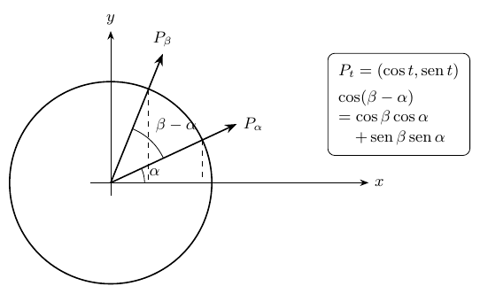
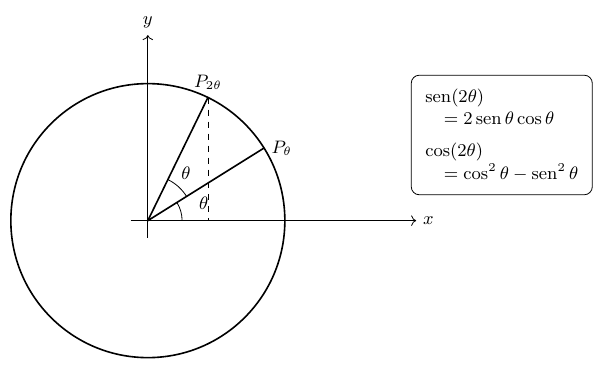
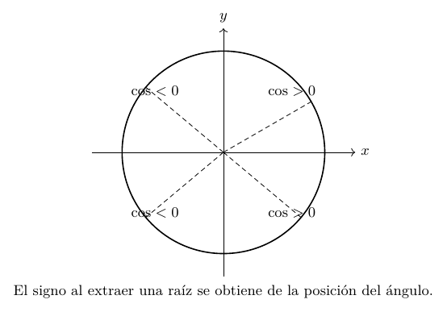
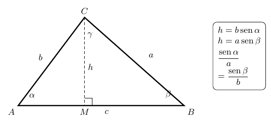
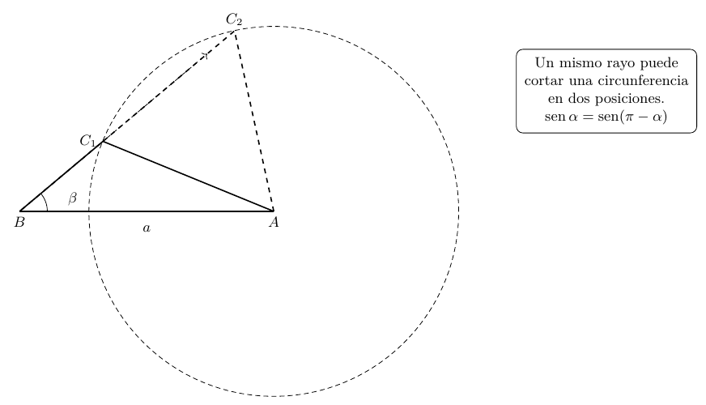
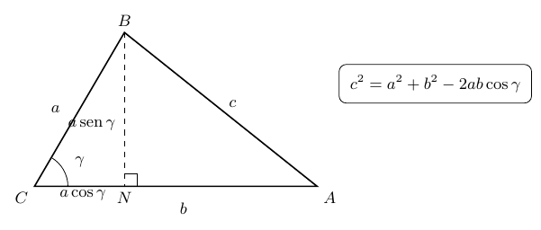
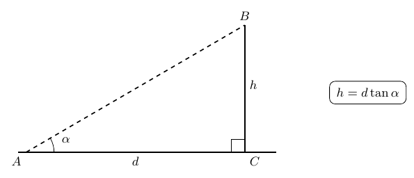
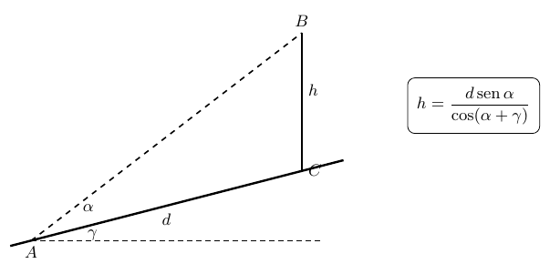
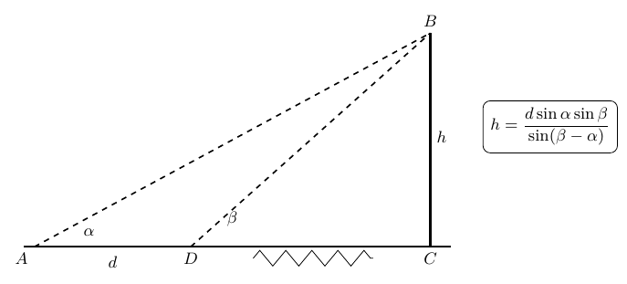
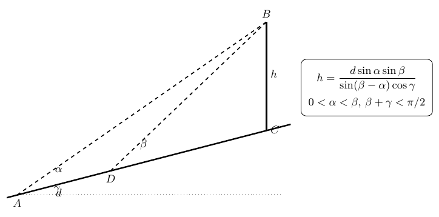

Identidades trigonométricas y resolución de triángulos
Capítulo 7 · Parte II. Funciones y trigonometría
Las fórmulas de suma, doble ángulo y ángulo medio permiten pasar de relaciones trigonométricas a problemas geométricos. Los teoremas del seno y del coseno unifican la resolución de triángulos.
Grabaciones de referencia: grabación de la cátedra 7.1.
Procedencia de este tramo: cátedra 7.1.
Reanudar las fórmulas de suma y diferencia
En la cátedra (11:10–23:00). La clase precedente había obtenido, mediante la invariancia de las distancias entre puntos del círculo unitario, la expresión
\[\boxed{\cos(\beta-\alpha)=\cos\beta\cos\alpha+\operatorname{sen}\beta\operatorname{sen}\alpha.}\]
El profesor recuerda dos propiedades ya demostradas: el coseno es una función par, \(\cos(-t)=\cos t\), y el seno es impar, \(\operatorname{sen}(-t)=-\operatorname{sen}t\). Estas propiedades sirven para deducir el coseno de una suma al reemplazar \(\alpha\) por \(-\alpha\):
\[ \begin{aligned} \cos(\beta+\alpha) &=\cos(\beta-(-\alpha))\\ &=\cos\beta\cos(-\alpha)+\operatorname{sen}\beta\operatorname{sen}(-\alpha)\\ &=\cos\beta\cos\alpha-\operatorname{sen}\beta\operatorname{sen}\alpha. \end{aligned} \]

Para obtener el seno de una suma se usa la relación de complementariedad, igualmente establecida en la cátedra anterior,
\[\operatorname{sen}t=\cos\left(\frac\pi2-t\right).\]
Desarrollo de la demostración. Aplicamos la fórmula del coseno de una diferencia:
\[ \begin{aligned} \operatorname{sen}(\alpha+\beta) &=\cos\left(\frac\pi2-\alpha-\beta\right)\\ &=\cos\left(\frac\pi2-\alpha\right)\cos\beta +\operatorname{sen}\left(\frac\pi2-\alpha\right)\operatorname{sen}\beta\\ &=\operatorname{sen}\alpha\cos\beta+\cos\alpha\operatorname{sen}\beta. \end{aligned} \]
Después, al sustituir \(\beta\) por \(-\beta\), la imparidad del seno cambia el signo del segundo sumando y se obtiene la fórmula para una diferencia. El resultado se organiza en cuatro identidades válidas para todos \(x,y\in\mathbb R\).
| Función | Identidad de adición |
|---|---|
| Coseno de una suma | \(\cos(x+y)=\cos x\cos y-\operatorname{sen}x\operatorname{sen}y\) |
| Coseno de una diferencia | \(\cos(x-y)=\cos x\cos y+\operatorname{sen}x\operatorname{sen}y\) |
| Seno de una suma | \(\operatorname{sen}(x+y)=\operatorname{sen}x\cos y+\cos x\operatorname{sen}y\) |
| Seno de una diferencia | \(\operatorname{sen}(x-y)=\operatorname{sen}x\cos y-\cos x\operatorname{sen}y\) |
La tabla admite una comprobación inmediata: tomando \(x=y\) en las fórmulas de diferencia se recuperan \(\cos0=\cos^2x+\operatorname{sen}^2x=1\) y \(\operatorname{sen}0=0\). El profesor utiliza explícitamente este examen para controlar los signos antes de aplicar fórmulas memorizadas.
Identidades del ángulo doble
En la cátedra (26:39–29:58). El caso particular \(y=x\) convierte la suma en \(2x\). La fórmula del seno da
\[ \boxed{\operatorname{sen}(2x)=2\operatorname{sen}x\cos x.} \]
Para el coseno se obtiene
\[ \boxed{\cos(2x)=\cos^2x-\operatorname{sen}^2x.} \]

Desarrollo de la demostración. Por la identidad fundamental \(\operatorname{sen}^2x+\cos^2x=1\),
\[ \begin{aligned} \cos(2x) &=(1-\operatorname{sen}^2x)-\operatorname{sen}^2x =1-2\operatorname{sen}^2x,\\ \cos(2x) &=\cos^2x-(1-\cos^2x) =2\cos^2x-1. \end{aligned} \]
Por tanto, las tres versiones del coseno del ángulo doble son
\[\boxed{\cos(2x)=\cos^2x-\operatorname{sen}^2x=1-2\operatorname{sen}^2x=2\cos^2x-1.}\]
Cada escritura privilegia una familia de términos y permite resolver problemas diferentes. El profesor insiste en que los signos quedan fijados por las identidades de adición: colocar un signo positivo entre los dos cuadrados transformaría erróneamente el coseno del ángulo doble en la constante \(1\).
Cuadrados trigonométricos y ángulo medio
En la cátedra (29:58–43:53). Reorganizando las fórmulas anteriores se obtienen
\[ \boxed{\operatorname{sen}^2\left(\frac x2\right)=\frac{1-\cos x}{2}},\qquad \boxed{\cos^2\left(\frac x2\right)=\frac{1+\cos x}{2}}. \]
Estas identidades tienen la ventaja de expresar cuadrados trigonométricos mediante un ángulo doble del argumento. El profesor observa que ambos segundos miembros son no negativos porque \(-1\leq\cos x\leq1\).
Una precisión indispensable sobre los signos. Si conocemos el cuadrado de un número real, su raíz cuadrada principal expresa el valor absoluto de ese número. En particular,
\[ \left|\operatorname{sen}\left(\frac x2\right)\right| =\sqrt{\frac{1-\cos x}{2}},\qquad \left|\cos\left(\frac x2\right)\right| =\sqrt{\frac{1+\cos x}{2}}. \]
Para hallar el seno o el coseno del ángulo medio, se selecciona el signo correspondiente al cuadrante de \(x/2\). Así, por ejemplo, \(\cos(2\pi/3)=-1/2\) y la raíz principal de \(\cos^2(2\pi/3)\) es \(1/2\).

El profesor estudia luego la tangente del ángulo medio. Dividiendo las identidades anteriores, en los puntos donde \(\cos(x/2)\ne0\), se encuentra
\[\tan^2\left(\frac x2\right)=\frac{1-\cos x}{1+\cos x}.\]
Multiplicar numerador y denominador por \(1+\cos x\) permite usar \(1-\cos^2x=\operatorname{sen}^2x\):
\[ \tan^2\left(\frac x2\right) =\frac{\operatorname{sen}^2x}{(1+\cos x)^2}. \]
El profesor propone comprobar que, en realidad, vale la fórmula con su signo correspondiente:
\[ \boxed{\tan\left(\frac x2\right)=\frac{\operatorname{sen}x}{1+\cos x},\qquad x\ne(2k+1)\pi,\ k\in\mathbb Z.} \]
Ampliación editorial (demostración de la propuesta). Escribimos \(u=x/2\). Entonces
\[ \frac{\operatorname{sen}(2u)}{1+\cos(2u)} =\frac{2\operatorname{sen}u\cos u}{2\cos^2u} =\frac{\operatorname{sen}u}{\cos u} =\tan u, \]
siempre que \(\cos u\ne0\). Esa condición equivale precisamente a \(x\ne(2k+1)\pi\). La demostración conserva directamente el signo, de modo que completa la tarea propuesta al final de esta parte de la grabación.
Resolver un triángulo cualquiera
En la cátedra (44:00–46:25). Sea un triángulo \(ABC\), de lados \(a=|BC|\), \(b=|CA|\), \(c=|AB|\) y ángulos interiores \(\alpha=\angle A\), \(\beta=\angle B\), \(\gamma=\angle C\). Resolver el triángulo consiste en determinar sus tres longitudes y sus tres ángulos a partir de un conjunto suficiente de datos.
Los ángulos satisfacen
\[\alpha+\beta+\gamma=\pi,\]
mientras que las longitudes de sus lados son positivas y verifican las desigualdades triangulares. La estrategia que utiliza San Martín es construir triángulos rectángulos auxiliares mediante alturas, recuperar razones trigonométricas conocidas y eliminar las longitudes auxiliares.
Teorema del seno mediante dos alturas
En la cátedra (46:25–53:04). Se traza desde \(C\) la altura \(CM=h\) hasta el lado \(AB\). Para el caso en que el pie \(M\) pertenece al interior del segmento, aparecen dos triángulos rectángulos. Por las razones trigonométricas
\[h=b\operatorname{sen}\alpha,\qquad h=a\operatorname{sen}\beta.\]

Ambos miembros describen la misma altura. Al igualarlos y dividir por \(ab>0\) resulta
\[\frac{\operatorname{sen}\alpha}{a}=\frac{\operatorname{sen}\beta}{b}.\]
Una altura trazada desde otro vértice incorpora el tercer lado y el tercer ángulo. Así se obtiene el teorema del seno:
\[ \boxed{\frac{\operatorname{sen}\alpha}{a}=\frac{\operatorname{sen}\beta}{b}=\frac{\operatorname{sen}\gamma}{c}.} \]
Su formulación recíproca, igualmente útil, es \(a/\operatorname{sen}\alpha=b/\operatorname{sen}\beta=c/\operatorname{sen}\gamma\).
Ampliación editorial: demostración para todos los triángulos. La demostración de la grabación se ilustra con el pie de una altura en el lado. Para un ángulo obtuso, puede ser necesario prolongar ese lado. Una demostración que reúne todos los casos utiliza el área \(K\) del triángulo:
\[ K=\frac12bc\operatorname{sen}\alpha =\frac12ca\operatorname{sen}\beta =\frac12ab\operatorname{sen}\gamma. \]
Dado que \(a,b,c>0\), al dividir por \(abc/2\) se obtienen de nuevo las tres razones iguales. La fórmula de área usa el seno del ángulo comprendido entre dos lados, que es positivo para cualquier ángulo interior de un triángulo no degenerado.
Datos suficientes y el caso ambiguo lado–lado–ángulo
En la cátedra (53:04–1:02:45). Dados dos ángulos y un lado, el tercer ángulo es \(\pi\) menos la suma de los dos conocidos. El teorema del seno determina luego los dos lados restantes. Por ejemplo, con \(\alpha\), \(\beta\) y \(a\) conocidos,
\[\gamma=\pi-\alpha-\beta,\qquad b=\frac{a\operatorname{sen}\beta}{\operatorname{sen}\alpha},\qquad c=\frac{a\operatorname{sen}\gamma}{\operatorname{sen}\alpha}.\]
El profesor analiza después dos lados y un ángulo opuesto a uno de ellos. Supongamos conocidos \(a\), \(b\) y \(\beta\); el teorema del seno entrega
\[\boxed{\operatorname{sen}\alpha=\frac{a\operatorname{sen}\beta}{b}.}\]
La fracción del segundo miembro debe pertenecer a \([0,1]\). Aun cumpliendo esa condición, una ecuación \(\operatorname{sen}\alpha=s\) con \(0<s<1\) admite, en el intervalo \((0,\pi)\), los dos candidatos \(\alpha_1=\arcsin s\) y \(\alpha_2=\pi-\arcsin s\). Es necesario además comprobar que \(\alpha+\beta<\pi\).

El profesor muestra geométricamente cómo un segmento de longitud fija puede alcanzar una semirrecta en dos posiciones. Esa observación explica el caso ambiguo: los datos pueden determinar cero, uno o dos triángulos.
Ampliación editorial: clasificación para un ángulo agudo dado. Si \(0<\beta<\pi/2\), \(a,b>0\) y \(h=a\operatorname{sen}\beta\), el número de triángulos posibles es:
| Condición | Triángulos posibles |
|---|---|
| \(b<h\) | \(0\) |
| \(b=h\) | \(1\) (triángulo rectángulo) |
| \(h<b<a\) | \(2\) |
| \(b\geq a\) | \(1\) |
Para un ángulo dado obtuso, el lado opuesto al ángulo obtuso debe ser el mayor; por eso existe un triángulo si \(b>a\), y la construcción es única. Estas precisiones completan la discusión de existencia y multiplicidad iniciada en clase.
Teorema del coseno: Pitágoras y el término de corrección
En la cátedra (1:08:11–1:22:20). Cuando se conocen dos lados \(a\), \(b\) y su ángulo comprendido \(\gamma\), el teorema del seno deja dos ángulos desconocidos. Para determinar el tercero, el profesor traza una altura y aplica Pitágoras.

En una disposición con proyección horizontal interior, la altura es \(a\operatorname{sen}\gamma\) y la distancia horizontal que forma el otro cateto del triángulo de hipotenusa \(c\) es \(b-a\cos\gamma\). Por tanto,
\[ \begin{aligned} c^2 &=(a\operatorname{sen}\gamma)^2+(b-a\cos\gamma)^2\\ &=a^2(\operatorname{sen}^2\gamma+\cos^2\gamma)+b^2-2ab\cos\gamma\\ &=\boxed{a^2+b^2-2ab\cos\gamma}. \end{aligned} \]
Cuando el ángulo comprendido es obtuso, \(\cos\gamma<0\) y la misma expresión para la proyección horizontal incorpora el cambio de orientación. El profesor explica la validez de una única fórmula para los ángulos agudos, rectos y obtusos, y recupera Pitágoras cuando \(\gamma=\pi/2\).
Por simetría de las letras del triángulo se obtienen también
\[ \boxed{\begin{aligned} a^2&=b^2+c^2-2bc\cos\alpha,\\ b^2&=a^2+c^2-2ac\cos\beta,\\ c^2&=a^2+b^2-2ab\cos\gamma. \end{aligned}} \]
Interpretación geométrica. Si \(\gamma<\pi/2\), el término \(-2ab\cos\gamma\) disminuye \(c^2\) respecto de \(a^2+b^2\); si \(\gamma=\pi/2\), ese término vale cero; si \(\gamma>\pi/2\), aumenta \(c^2\). La ley del coseno constituye por tanto una forma general de Pitágoras, con una corrección que mide el ángulo entre los dos lados conocidos.
Ampliación editorial: tres lados conocidos. El teorema también permite calcular ángulos:
\[\boxed{\cos\gamma=\frac{a^2+b^2-c^2}{2ab}.}\]
Conociendo los tres lados se calcula cada coseno y después se determina el ángulo interior en \([0,\pi]\). La desigualdad triangular garantiza que esos lados puedan constituir un triángulo no degenerado.
Aplicación I: altura de una torre desde terreno horizontal
En la cátedra (1:22:20–1:25:05). Un observador situado en \(A\) mira la parte superior \(B\) de una torre vertical cuya base es \(C\). Se conoce la distancia horizontal \(AC=d>0\) y el ángulo de elevación \(\alpha\in(0,\pi/2)\). El triángulo \(ACB\) es rectángulo en \(C\).

La tangente es la razón entre cateto opuesto y adyacente:
\[\tan\alpha=\frac hd,\qquad\boxed{h=d\tan\alpha.}\]
Esta expresión puede obtenerse mediante el seno y el coseno del ángulo y representa una aplicación directa de la trigonometría de triángulos rectángulos.
Aplicación II: altura con terreno inclinado
En la cátedra (1:25:05–1:29:05). El segmento de terreno \(AC=d\) asciende con inclinación \(\gamma>0\) respecto de la horizontal. La visual desde \(A\) hasta la cúspide \(B\) forma un ángulo \(\alpha\) respecto del terreno. La torre \(BC=h\) es vertical.

En el triángulo \(ABC\) el ángulo en \(A\) es \(\alpha\), el ángulo en \(C\) es \(\pi/2+\gamma\) y el ángulo en \(B\) es \(\pi/2-(\alpha+\gamma)\). La ley del seno da
\[\frac{h}{\operatorname{sen}\alpha}=\frac{d}{\operatorname{sen}(\pi/2-\alpha-\gamma)}.\]
Usando \(\operatorname{sen}(\pi/2-t)=\cos t\) resulta
\[\boxed{h=\frac{d\operatorname{sen}\alpha}{\cos(\alpha+\gamma)}.}\]
Las condiciones geométricas de este modelo son \(0<\alpha\), \(0\leq\gamma\) y \(\alpha+\gamma<\pi/2\). Cuando \(\gamma=0\), se recupera \(h=d\tan\alpha\).
Aplicación III: dos observadores con base inaccesible
En la cátedra (1:29:05–1:38:40). Dos puntos de observación \(A\) (más lejano) y \(D\) (más próximo) se encuentran sobre terreno horizontal a distancia conocida \(AD=d\). La base \(C\) de la torre es inaccesible. El ángulo de elevación desde \(A\) es \(\alpha\), y desde \(D\) es \(\beta\), con \(0<\alpha<\beta<\pi/2\).

Se comienza por el triángulo \(ADB\): su ángulo en \(A\) es \(\alpha\), su ángulo en \(D\) es \(\pi-\beta\) y el ángulo de \(B\) es \(\beta-\alpha\). Al aplicar la ley del seno, la distancia visual \(DB=x\) satisface
\[\frac{x}{\operatorname{sen}\alpha}=\frac{d}{\operatorname{sen}(\beta-\alpha)},\qquad x=\frac{d\operatorname{sen}\alpha}{\operatorname{sen}(\beta-\alpha)}.\]
El triángulo \(DCB\) es rectángulo, con hipotenusa \(DB=x\) y ángulo \(\beta\) en \(D\), por lo cual \(h=x\operatorname{sen}\beta\). Sustituyendo el resultado anterior:
\[\boxed{h=\frac{d\operatorname{sen}\alpha\operatorname{sen}\beta}{\operatorname{sen}(\beta-\alpha)}.}\]
El profesor verifica la fórmula en el caso particular en que el segundo observador se sitúa en la base de la torre: entonces \(\beta=\pi/2\) y la expresión se reduce a \(h=d\tan\alpha\).
Aplicación IV: dos observadores sobre terreno inclinado
En la cátedra (1:38:40–1:40:32): problema propuesto. El terreno asciende desde \(A\) hacia \(D\) y \(C\) con inclinación \(\gamma\) respecto de la horizontal. Los dos observadores siguen separados por la distancia \(AD=d\), medida sobre el terreno. Sus visuales forman ángulos \(\alpha\) y \(\beta\), respectivamente, respecto del terreno, con \(0<\alpha<\beta\); la torre es vertical.

El profesor observa que el triángulo formado por los dos observadores y la cúspide mantiene el ángulo \(\beta-\alpha\) y que el segundo paso requiere incorporar el ángulo \(\pi/2+\gamma\) en la base de la torre. Deja el cálculo final como ejercicio.
Ampliación editorial: solución completa. Como en el problema anterior, el triángulo \(ADB\) determina
\[x=DB=\frac{d\operatorname{sen}\alpha}{\operatorname{sen}(\beta-\alpha)}.\]
En el triángulo \(DCB\), los lados \(DB=x\) y \(BC=h\) son opuestos, respectivamente, a los ángulos \(\pi/2+\gamma\) y \(\beta\). La ley del seno establece
\[\frac{h}{\operatorname{sen}\beta}=\frac{x}{\operatorname{sen}(\pi/2+\gamma)} =\frac{x}{\cos\gamma}.\]
De ahí resulta
\[\boxed{h=\frac{d\operatorname{sen}\alpha\operatorname{sen}\beta}{\operatorname{sen}(\beta-\alpha)\cos\gamma}.}\]
Se exige \(0\leq\gamma<\pi/2\), \(\cos\gamma>0\) y, para que las visuales intercepten la torre por encima de su base, \(0<\alpha<\beta\) y \(\beta+\gamma<\pi/2\). Con \(\gamma=0\) reaparece la fórmula del terreno horizontal.
Taller de problemas y soluciones
Los ejercicios se presentan a continuación según la fuente de origen; las ampliaciones editoriales de cada apuntes permanecen expresamente identificadas.
Laboratorio de problemas complementarios: soluciones razonadas — cátedra 7.1
Los siguientes problemas son ampliaciones editoriales originales, organizadas para ejercitar las técnicas de la cátedra, con progresión desde identidades hasta levantamiento de medidas.
E1. Coseno de \(15^\circ\)
Como \(15^\circ=45^\circ-30^\circ\), usamos el coseno de una diferencia:
\[ \begin{aligned} \cos15^\circ&=\cos45^\circ\cos30^\circ+\operatorname{sen}45^\circ\operatorname{sen}30^\circ\\ &=\frac{\sqrt2}{2}\frac{\sqrt3}{2}+\frac{\sqrt2}{2}\frac12 =\boxed{\frac{\sqrt6+\sqrt2}{4}}. \end{aligned} \]
E2. Seno de \(15^\circ\)
\[ \operatorname{sen}(45^\circ-30^\circ) =\frac{\sqrt2}{2}\frac{\sqrt3}{2}-\frac{\sqrt2}{2}\frac12 =\boxed{\frac{\sqrt6-\sqrt2}{4}}. \]
E3. Coseno de \(75^\circ\)
El ángulo \(75^\circ=45^\circ+30^\circ\). Por la fórmula de la suma,
\[\cos75^\circ=\frac{\sqrt6-\sqrt2}{4}.\]
La igualdad \(\cos75^\circ=\operatorname{sen}15^\circ\) confirma el cálculo mediante complementariedad.
E4. Seno de \(75^\circ\)
\[\operatorname{sen}75^\circ=\operatorname{sen}(45^\circ+30^\circ) =\frac{\sqrt6+\sqrt2}{4}.\]
E5. Seno del doble de \(\pi/6\)
\[\operatorname{sen}(\pi/3)=2\operatorname{sen}(\pi/6)\cos(\pi/6) =2\cdot\frac12\cdot\frac{\sqrt3}{2}=\frac{\sqrt3}{2}.\]
E6. Coseno del doble de \(\pi/6\)
\[\cos(\pi/3)=\cos^2(\pi/6)-\operatorname{sen}^2(\pi/6) =\frac34-\frac14=\frac12.\]
E7. Seno cuadrado de \(\pi/12\)
Con \(x=\pi/6\), la identidad del ángulo medio produce
\[\operatorname{sen}^2(\pi/12)=\frac{1-\cos(\pi/6)}2 =\frac{2-\sqrt3}{4}.\]
El resultado es positivo y la elección de la raíz positiva para el seno mismo se justifica porque \(\pi/12\) pertenece al primer cuadrante.
E8. Coseno de un ángulo medio del segundo cuadrante
Calculemos \(\cos(2\pi/3)\) con la fórmula del medio ángulo de \(x=4\pi/3\). Como
\[\cos^2(2\pi/3)=\frac{1+\cos(4\pi/3)}2=\frac{1-1/2}{2}=\frac14,\]
el valor absoluto es \(1/2\). Dado que \(2\pi/3\) está en el segundo cuadrante, el coseno es \(\boxed{-1/2}\).
E9. Tangente de \(\pi/8\)
Usamos la identidad exacta de tangente del ángulo medio:
\[\tan(\pi/8)=\frac{\operatorname{sen}(\pi/4)}{1+\cos(\pi/4)} =\frac{\sqrt2}{2+\sqrt2}=\boxed{\sqrt2-1}.\]
E10. Convertir un producto en suma
Sumamos las fórmulas de \(\cos(x+y)\) y \(\cos(x-y)\):
\[\cos(x+y)+\cos(x-y)=2\cos x\cos y.\]
Por tanto,
\[\boxed{\cos x\cos y=\frac{\cos(x+y)+\cos(x-y)}2}. \]
E11. Un triángulo con dos ángulos y un lado
Sea \(\alpha=30^\circ\), \(\beta=45^\circ\) y \(a=8\). El tercero es \(\gamma=105^\circ\). Por la ley del seno,
\[b=8\frac{\sin45^\circ}{\sin30^\circ}=8\sqrt2,\qquad c=8\frac{\sin105^\circ}{\sin30^\circ}=16\sin105^\circ.\]
Como \(\sin105^\circ=(\sqrt6+\sqrt2)/4\), resulta \(c=4(\sqrt6+\sqrt2)\).
E12. Dos soluciones en el caso ambiguo
Conocemos \(\beta=30^\circ\), \(a=8\) y \(b=5\). La ley del seno da
\[\sin\alpha=\frac{8\sin30^\circ}{5}=\frac45.\]
Los candidatos son \(\alpha_1=\arcsin(4/5)\approx53.130^\circ\) y \(\alpha_2=180^\circ-\alpha_1\approx126.870^\circ\). Ambos satisfacen \(\alpha+\beta<180^\circ\). Por tanto existen dos triángulos, cuyos terceros ángulos son aproximadamente \(96.870^\circ\) y \(23.130^\circ\). El lado restante se obtiene por \(c=(b/\sin\beta)\sin\gamma=10\sin\gamma\).
E13. Determinar el tercer lado mediante el coseno
En un triángulo se conocen \(a=5\), \(b=7\) y \(\gamma=60^\circ\). Entonces
\[c^2=25+49-2\cdot5\cdot7\cdot\frac12=39,\qquad\boxed{c=\sqrt{39}}.\]
E14. Determinar un ángulo a partir de tres lados
Para \(a=5\), \(b=7\) y \(c=8\), la ley del coseno entrega
\[\cos\gamma=\frac{25+49-64}{2\cdot5\cdot7}=\frac17, \qquad \gamma=\arccos\frac17.\]
El ángulo es agudo porque su coseno es positivo.
E15. Torre horizontal con datos elementales
Un observador se encuentra a \(d=50\,\mathrm m\) de la base y observa un ángulo \(\alpha=30^\circ\). Entonces
\[h=50\tan30^\circ=\boxed{\frac{50}{\sqrt3}\,\mathrm m\approx28.87\,\mathrm m}.\]
E16. Torre con pendiente del terreno
El terreno asciende \(\gamma=10^\circ\), la distancia sobre el terreno es \(d=80\,\mathrm m\) y el ángulo visual respecto de ese terreno es \(\alpha=20^\circ\). Resulta
\[h=\frac{80\sin20^\circ}{\cos30^\circ}\,\mathrm m\approx31.60\,\mathrm m.\]
E17. Dos observadores: punto inaccesible
Tomamos \(d=40\,\mathrm m\), \(\alpha=30^\circ\), \(\beta=45^\circ\). El teorema del seno establece
\[h=\frac{40\sin30^\circ\sin45^\circ}{\sin15^\circ}\,\mathrm m =20(\sqrt3+1)\,\mathrm m\approx54.64\,\mathrm m.\]
E18. Dos observadores en terreno inclinado
Con los mismos datos del ejercicio anterior y pendiente \(\gamma=10^\circ\), la fórmula del problema IV proporciona
\[h=\frac{40\sin30^\circ\sin45^\circ}{\sin15^\circ\cos10^\circ}\,\mathrm m\approx55.49\,\mathrm m.\]
La comparación con E17 muestra el factor \(1/\cos\gamma>1\) que introduce la inclinación cuando la distancia entre los observadores se mide sobre el suelo.
E19. Área por dos lados y el ángulo comprendido
Para lados \(a=6\) y \(b=9\) que forman \(\gamma=30^\circ\), el área es
\[K=\frac12 ab\sin\gamma=\frac12\cdot6\cdot9\cdot\frac12 =\boxed{13.5}\ \text{unidades cuadradas}.\]
E20. Desigualdad de los lados desde la ley del coseno
Si \(0<\gamma<\pi\), se cumple \(-1<\cos\gamma<1\). Como \(a,b>0\), de
\[c^2=a^2+b^2-2ab\cos\gamma\]
se deduce \((a-b)^2<c^2<(a+b)^2\) y por consiguiente
\[\boxed{|a-b|<c<a+b.}\]
Así, la ley del coseno contiene como consecuencia algebraica las desigualdades que caracterizan las longitudes de los lados de un triángulo no degenerado.
Este capítulo pertenece a la edición temática no oficial del curso IC2021. Índice del libro · Fuentes y concordancia.